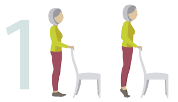
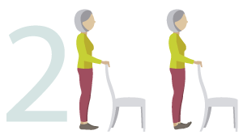

6 exercises for strength and balance
Try these six simple exercises two or three times a week – every day if you like – and you should soon notice improvements to your co-ordination and balance
• MAKE SURE THE CHAIR YOU USE IS STURDY
• WEAR SUPPORTIVE SHOES
• IF YOU EXPERIENCE CHEST PAIN, DIZZINESS OR SEVERE SHORTNESS OF BREATH, STOP AND CALL YOUR GP OR CALL 111
• A SLIGHT SORENESS THE DAY AFTER IS QUITE NORMAL

Heel Raises
Stand tall, holding the back of
a sturdy kitchen-type chair or
kitchen sink, then lift your heels
off the floor, taking your weight
onto your big toes. Hold for
three seconds, then lower with
control. Repeat 10 times.

Toe Raises
Stand tall holding the same
support, then raise your
toes – taking your weight on
your heels. Don’t stick your
bottom out. Hold for three
seconds, then lower with
control. Repeat 10 times